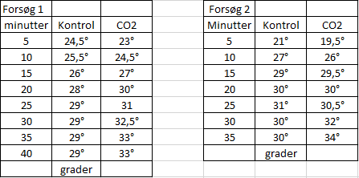

I dette forsøg kan man lave sin egen drivhuseffekt. Forsøget kræver to ens beholdere – så kan man eksperimentere med den ene, mens den anden er et kontrolforsøg, som man kan sammenligne med.
Lys fra Solen består af kortbølget elektromagnetisk stråling, der har nemt ved at komme forbi partiklerne i atmosfæren. Når lyset rammer Jorden, bliver en stor del af det til varme. Varme er langbølget infrarød stråling med mindre energi end lys. Derfor har varmen sværere ved at komme forbi partiklerne i atmosfæren, og noget reflekteres tilbage til Jorden. Herved holdes på varmen, og det kaldes drivhuseffekten. Uden en vis drivhuseffekt ville temperaturen på Jorden være omkring -17 grader.
Partiklerne, der holder på varmen i atmosfæren, består af mange forskellige stoffer, f.eks. vandamp, ozon og metan. CO2 er også en drivhusgas, der holder på varmen – og grunden til, at meget af opmærksomheden er rettet mod netop denne drivhusgas er, at det høje niveau i atmosfæren er menneskeskabt. Det betyder også, at vi kan gøre noget ved vores udledning af CO2 og begrænse stigningen af denne drivhusgas i atmosfæren.
Formålet med forsøget er at se hvad CO2 i atmosfæren gør ved tempraturen på jorden.
Materiale liste: 2 beholdere på ca. 1 liter, 1 lampe med en kraftig pære, 2 termometre, edike, bagepulver
Billedet over viser et skema over de opservationer som vi har udført. På billedet kan man se at graderne stiger meget når der er CO2 i luften, og det er fordi at CO2 holder varmen inde.